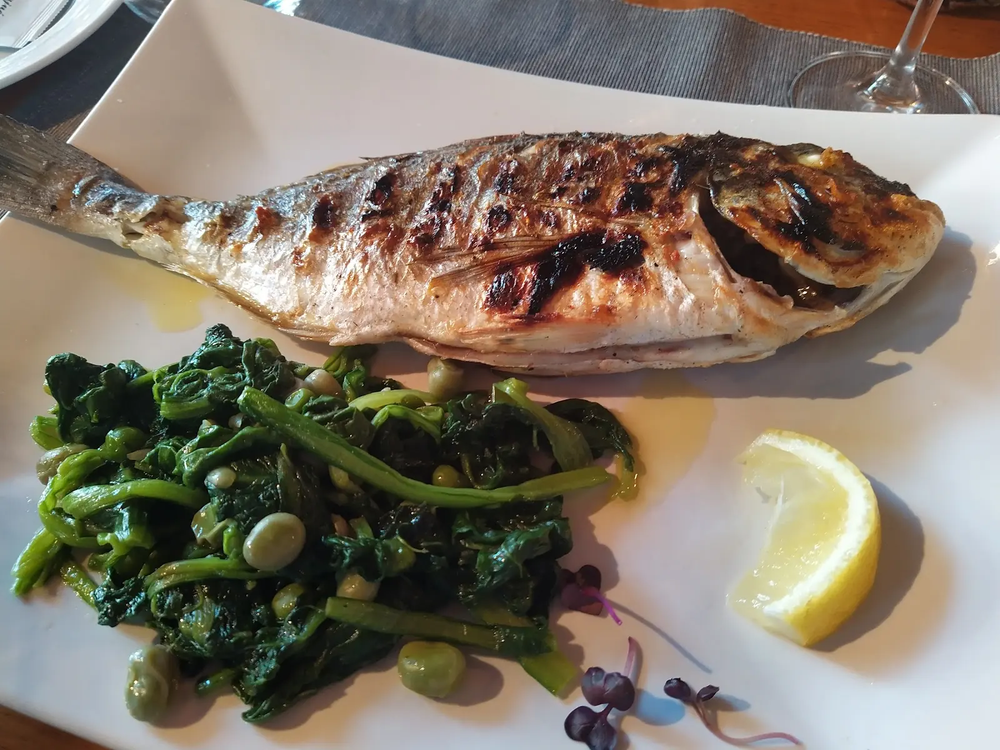
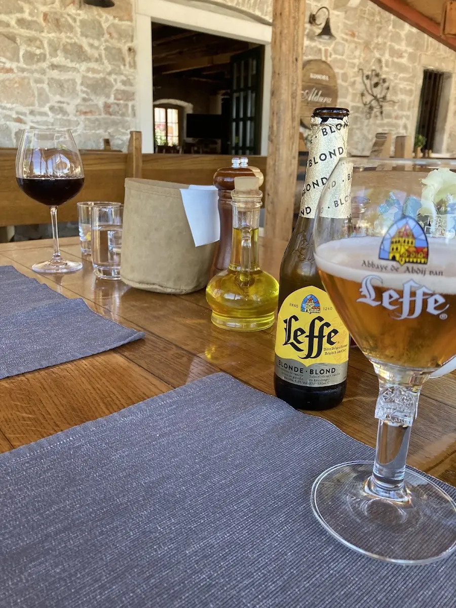
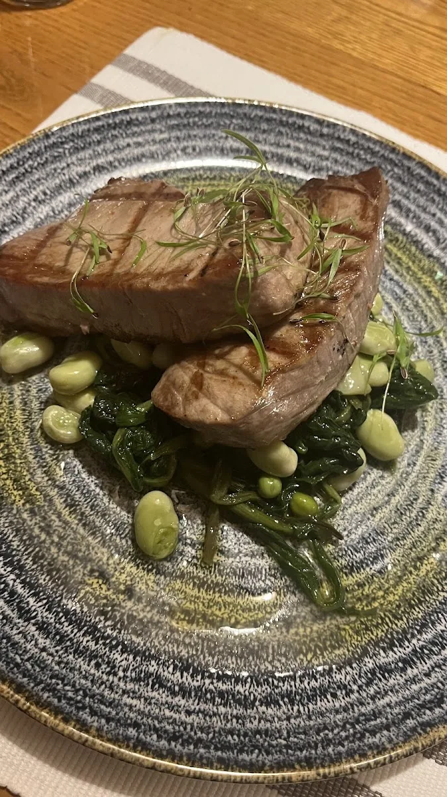
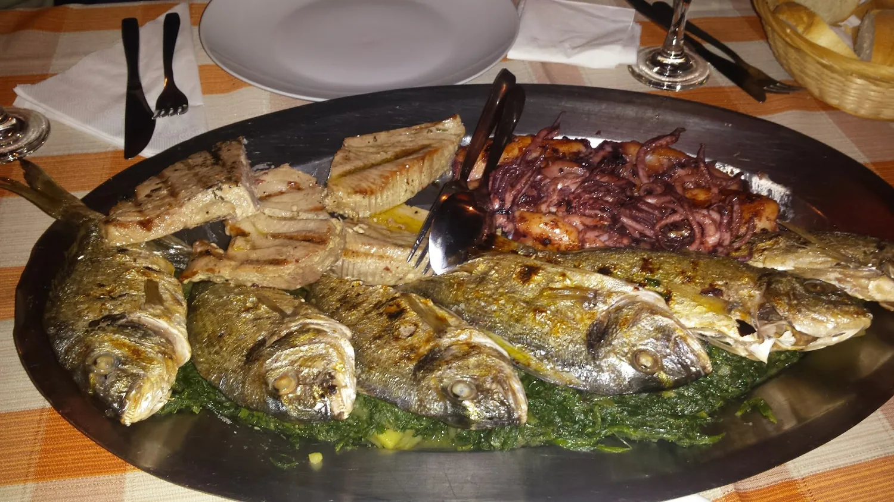
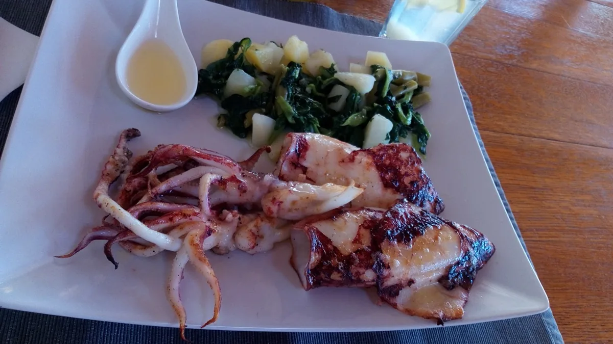
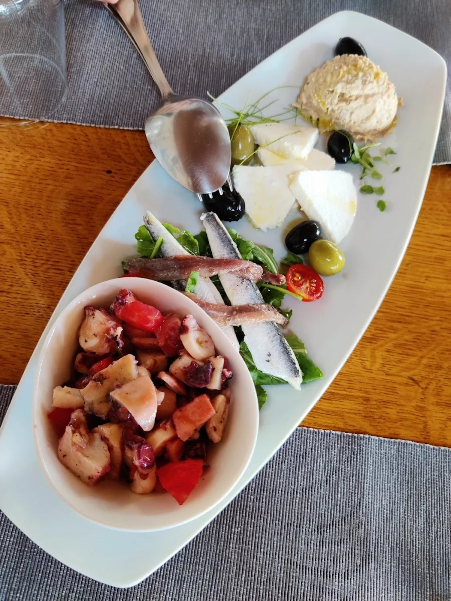
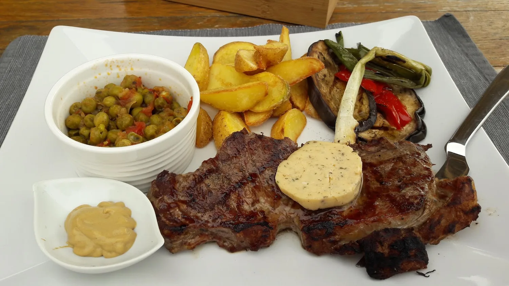
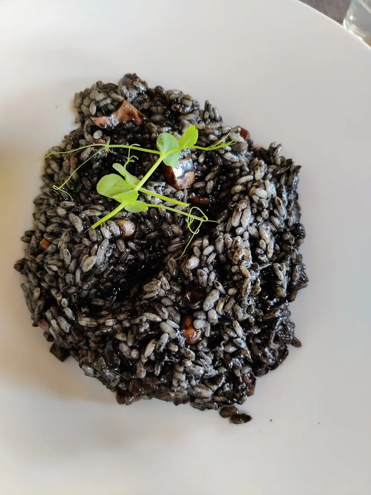
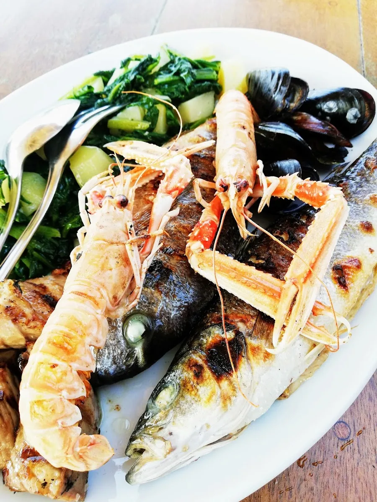

Mediteranska i dalmatinska kuhinja na rivi otoka koralja — gdje more završava, a večera počinje.
Konoba u obnovljenoj staroj uljari, točno na mulu.
Aldura živi u kamenim zidovima nekadašnje uljare na zlarinskoj rivi — mjestu gdje se stoljećima cijedilo maslinovo ulje, a danas se za stol sjeda uz miris mora i drvenog ugljena. Na otoku bez automobila, dokle dopire samo trajekt iz Šibenika, vrijeme se usporava. Kuhinja je jednostavna i iskrena: svježa riba, plodovi mora i pomno biran podrum vina, posluženi na terasi uz more, u toplim ljetnim večerima.

Zgrada Aldure nekoć je bila uljara — mjesto gdje se masline pretvarale u ulje. Obnovljena je tako da sačuva svoju dušu: izvorni kamen, debele zidove i hladovinu koja prija u najtoplijim danima.
Zlarin je otok koralja — bez automobila, tih i zelen, do kojeg se stiže trajektom iz Šibenika. Riva pred konobom mjesto je gdje pristaju brodovi, a večeri se otežu uz svjetlo svijeća i pljuskanje mora o mul.







Broj stolova na terasi je ograničen, posebno za toplih ljetnih večeri. Najbolje je rezervirati telefonom — javit ćemo vam se osobno.
Konoba Aldura nalazi se uz samo more, na glavnoj rivi otoka Zlarina — nekoliko koraka od mjesta gdje pristaje trajekt iz Šibenika.
Otok je bez automobila, pa se do nas dolazi pješice, šetnjom uz mul. Pratite miris drvenog ugljena.
Zlarinska obala 2, 22232 Zlarin · Hrvatska